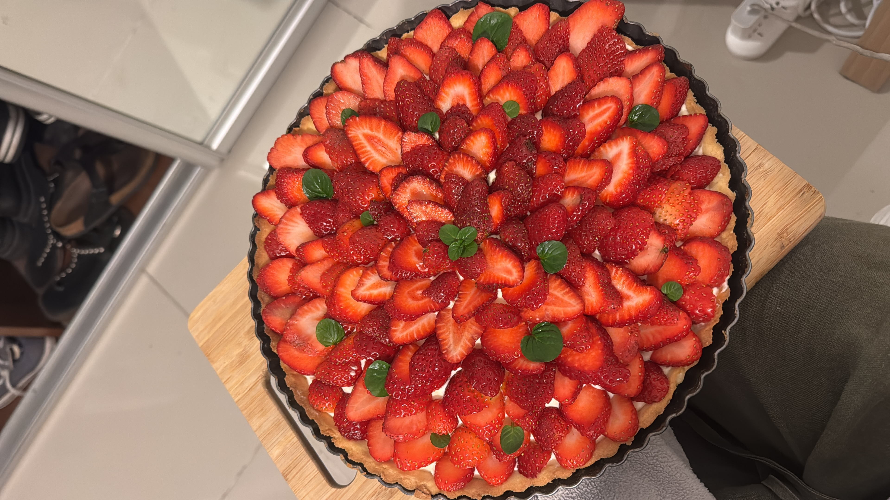

Tarta de frutilla

VARIANTE 1: ALMENDRAS
Ingredientes
- 500 g de frutillas
- Miel
- 100 g de manteca pomada
- 120 g de azúcar
- 2 huevos
- 160 g de polvo de almendras
- Masa sablée
Procedimiento
- Preparar la masa sablée y dejar reposar durante 1 hora.
- Para la crema de almendras, colocar la manteca pomada en un recipiente.
- Agregar el azúcar y los huevos.
- Incorporar por último el polvo de almendras.
- En una tartera, estirar la masa y colocar el relleno.
- Hornear aproximadamente 20-25 minutos a 170 °C.
- Dejar enfriar.
- Colocar las frutillas por encima.
- Derretir la miel y pincelar la tarta.
VARIANTE 2: CREMA Y DDL
Ingredientes
- 500 g de frutillas
- 2 potes de dulce de leche
- 1 pote de crema
- ½ taza de azúcar
- Masa sablée
Procedimiento
- Preparar la masa sablée y dejar reposar durante 1 hora.
- Batir la crema junto con el azúcar hasta que esté semi montada.
- En una tartera, estirar la masa y colocar el relleno.
- Hornear aproximadamente 20 minutos a 170 °C.
- Dejar enfriar.
- Rellenar con el dulce de leche y la crema.
- Colocar las frutillas por encima.
VARIANTE 3: CREMA PASTELERA
Ingredientes
- 600 g de frutillas
- Crema pastelera
- Masa sablée
Procedimiento
- Preparar la masa sablée y dejar reposar durante 1 hora.
- En una tartera, estirar la masa.
- Hornear aproximadamente 20 minutos a 170 °C.
- Dejar enfriar completamente.
- Preparar la crema pastelera y echarla sobre la masa.
- Una vez fría la tarta, colocar las frutillas por encima.